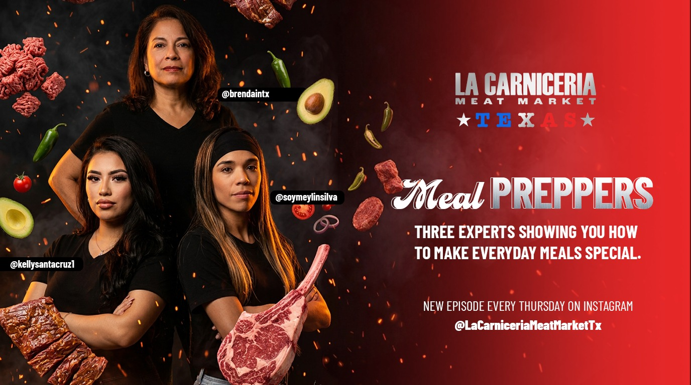

Brenda
@brendaintx
One of three Meal Preppers, showing you how to make everyday meals special.
Follow on Instagram →
New Episode Every Thursday · On Instagram
Three experts, three styles, one mission: turning everyday cuts from La Carnicería into the recipes you'll actually cook. Every Thursday, one of them shares a new one.
@brendaintx
One of three Meal Preppers, showing you how to make everyday meals special.
Follow on Instagram →@kellysantacruz1
One of three Meal Preppers, showing you how to make everyday meals special.
Follow on Instagram →@soymeylinsilva
One of three Meal Preppers, showing you how to make everyday meals special.
Follow on Instagram →The Content
This is where it lives: a new recipe video from one of the three Meal Preppers, dropping weekly. Follow along to catch each one the moment it goes live.
Watch it live on Instagram when it drops.
Watch on Instagram →Watch it live on Instagram when it drops.
Watch on Instagram →Watch it live on Instagram when it drops.
Watch on Instagram →Recipe cards update here as each episode airs — for now, catch every drop on Instagram.
Don't Miss An Episode
Every Meal Preppers episode is shared straight to Instagram — new recipe, new video, every Thursday.